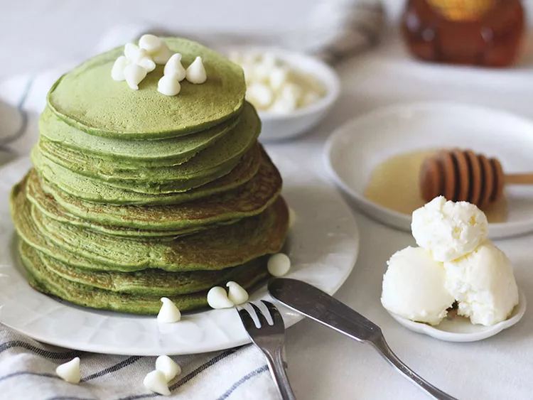

Matcha Pancakes

These matcha pancakes are a treat.
We're strong believers in sleeping in and brunching on the weekends
(we didn't work hard all week for nothing!),
so it's only natural that we treat ourselves to one of our favorite brunch foods: the classic pancake.
There's just something about stacks of fluffy, buttery breakfast cakes that make us feel like we're starting
the morning off with dessert, especially if chocolate chips are inside.
Happy brunching! Top with more white chocolate chips, honey, and butter, and enjoy.
- Prep Time: 10 mins
- Cook Time: 15 mins
- Total Time: 25 mins
- Servings: 6
- Yield: 6 small pancakes
Ingredients
- 1 cup all-purpose flour
- 1 tablespoon green tea powder (matcha)
- 2 teaspoons baking powder
- 1/4 teaspoon salt
- 1 cup cashew milk
- 1 tablespoon cashew milk
- 1 large egg
- 2 tablespoons olive oil
- 2 teaspoons vanilla extract
- 1/4 cup white chocolate
Directions
-
Step One
- Whisk together flour, matcha, baking powder, and salt in a large bowl.
- Make a well in the center of mixture;
add 1 cup plus 1 tablespoon cashew milk, egg, olive oil, and vanilla to the well.
- Whisk batter briefly until just a few small clumps of flour remain.
- Add chocolate chips; stir again briefly.
-
Step Two
- Grease a small saucepan lightly; heat over medium-low heat.
- Transfer 2 to 3 spoonfuls batter onto the center of the pan,
spreading batter with the back of the spoon.
- Cook until small bubbles rise to the surface and burst, about 1 minute.
- Flip and cook until the edges are lightly golden brown, about 1 minute more.
- Repeat with remaining batter.